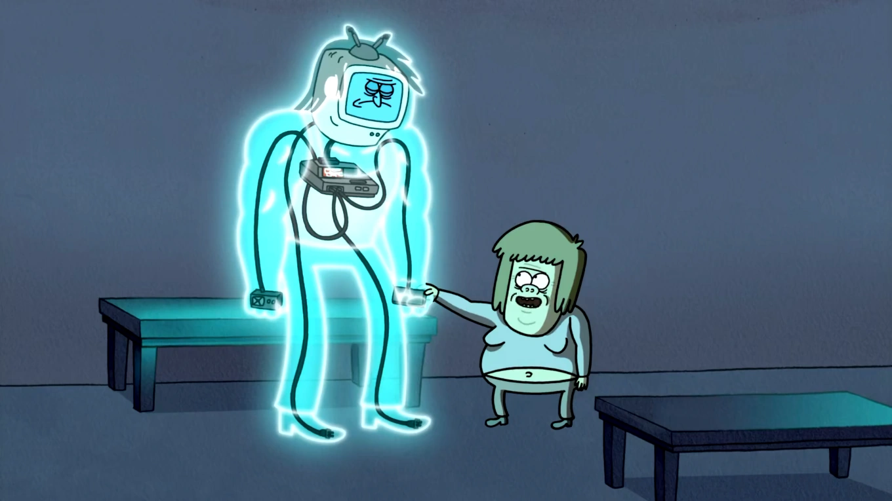

Un show más
Regular Show es una serie animada de televisión estadounidense de comedia, creada por J. G. Quintel para Cartoon Network. Está protagonizada por dos amigos, Mordecai —un arrendajo azul— y Rigby —un mapache—, encargados de mantenimiento en un parque, que buscan cualquier excusa para no trabajar.
El Martillo (mismo nombre en España y The Hammer en Estados Unidos) es un personaje de Un Show Más que Mordecai y Rigby tratan de derrotar en su videojuego en el episodio "Ira Contra el Televisor". Se trata de un dúo de Kárate pasando por los niveles, y tienen que derrotar a los enemigos, como los Gamberros Triples y Monstruo Rosa Gigante. Una manera de derrotar a los grandes jefes es darles una patada en la ingle. El Martillo es el jefe final del juego.
visita el video de !Es el martillo es real!

Personaje
Actor de voz
Mordecai
J.G.Quintel
Rigby
William salyers
Musculoso
Sam Marin
Ira contra el televisor
Ira Contra El Televisor (Rage Against The TV en Estados Unidos y Rabia Contra La Tele en España) es el octavo episodio de la Segunda Temporada (y el 20 en general) de Un Show Más.
Después de 20 horas de intentar superar un videojuego, Mordecai y Rigby llegan al ultimo nivel, donde deben derrotar al jefe "El Martillo", quien nadie ha vencido. Al encontrar su punto débil (golpearlo con los muebles), su televisor se descompone. Ellos tratan de pedir ayuda a Skips, Papaleta, Musculoso y a Fantasmin e incluso a Benson pero les dice que no. Por lo cual deciden comprar uno, pero como no tenían dinero le piden uno a Jimmy (un vendedor de la tienda y amigo de Musculoso) e intentan comprar uno a color pero no tienen dinero y él les da un televisor antigua, a blanco y negro, luego ven que el cable no es con la conexión, así que deciden reconstruirlo con partes usadas y viejas para ver a "El Martillo". Sin embargo cuando quitan la pausa, "El Martillo" se vuelve real, y ahora deben vencerlo antes de que los destruya, al final le lanzan cosas y lo vencen, el episodio termina con Benson confundido por el desastre ocurrido en la Casa.